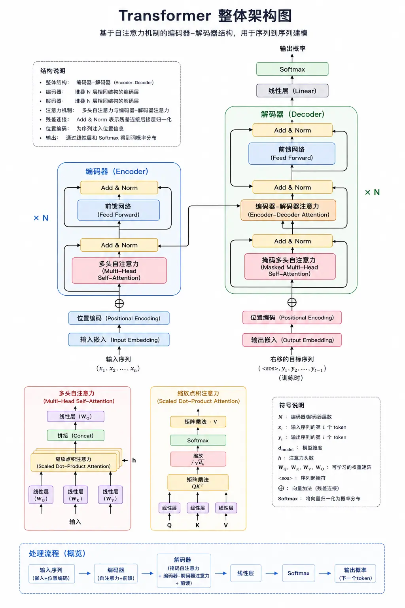

Transformer 徹底解説
2017年、Google は論文「Attention Is All You Need」を発表し、Transformer アーキテクチャを提案しました。この論文が AI 分野を根本的に変えるとは、誰も思いませんでした。
今日の GPT、Claude、Gemini、Llama……ほぼすべての主流大規模言語モデルは、本質的に Transformer の変種です。
Transformer を理解すれば、現代の LLM の90%を理解したことになります。
この記事では、Transformer の各コンポーネントを深く掘り下げます：自己注意、マルチヘッド・アテンション、位置エンコーディング、フィードフォワードネットワーク、レイヤー正規化……「何か」だけでなく、より重要な「なぜ」を説明します。
これは最も技術的に深いモジュールのひとつです。コードでコア計算をデモし、公式を理解するだけでなく、自分で実装できるようにします。
Transformer 前史：RNN の限界
Transformer が登場する前、系列タスク（翻訳やテキスト生成など）は主に RNN（リカレントニューラルネットワーク）とその変種である LSTM、GRU が使われていました。
RNN の仕組み
RNN の核心的な考え方は「逐次処理」です。入力系列は単語ごとにネットワークに入力され、各ステップの出力にはそれ以前のすべての単語の情報が含まれます。
実例
# 简化版 RNN 前向传播演示
# ============================================
import math
class SimpleRNN:
"""简化的 RNN 实现，用于演示原理"""
def __init__(self, input_size: int, hidden_size: int):
"""初始化 RNN 参数"""
import random
random.seed(42) # 设置随机种子保证可复现
# 输入到隐藏层的权重
self.Wx = [[random.uniform(-0.1, 0.1) for _ in range(hidden_size)]
for _ in range(input_size)]
# 隐藏层到隐藏层的权重
self.Wh = [[random.uniform(-0.1, 0.1) for _ in range(hidden_size)]
for _ in range(hidden_size)]
# 偏置
self.b = [0.0 for _ in range(hidden_size)]
def step(self, x: list, h_prev: list) -> list:
"""单步 RNN：输入 x 和前一时刻隐藏状态 h_prev，输出新的隐藏状态"""
hidden_size = len(h_prev)
h_new = [0.0 for _ in range(hidden_size)]
# h_new = tanh(Wx·x + Wh·h_prev + b)
for i in range(hidden_size):
# 计算 Wx·x
wx_sum = sum(x[j] * self.Wx[j][i] for j in range(len(x)))
# 计算 Wh·h_prev
wh_sum = sum(h_prev[j] * self.Wh[j][i] for j in range(hidden_size))
# 加偏置，过 tanh
h_new[i] = math.tanh(wx_sum + wh_sum + self.b[i])
return h_new
def forward(self, sequence: list) -> list:
"""处理完整序列"""
hidden_size = len(self.b)
h = [0.0 for _ in range(hidden_size)] # 初始隐藏状态
hidden_states = []
for x in sequence:
h = self.step(x, h)
hidden_states.append(h)
return hidden_states
# 测试：用简单的向量序列演示
input_size = 4
hidden_size = 3
rnn = SimpleRNN(input_size, hidden_size)
# 假设输入序列是 4 个词，每个词用 4 维向量表示
sequence = [
[1.0, 0.0, 0.0, 0.0], # 词 1
[0.0, 1.0, 0.0, 0.0], # 词 2
[0.0, 0.0, 1.0, 0.0], # 词 3
[0.0, 0.0, 0.0, 1.0], # 词 4
]
hidden_states = rnn.forward(sequence)
print("Runoob 简单 RNN 演示")
print("=" * 40)
for i, h in enumerate(hidden_states):
print(f"第 {i+1} 步隐藏状态: {[f'{v:.4f}' for v in h]}")
# 输出：
# Runoob 简单 RNN 演示
# ========================================
# 第 1 步隐藏状态: ['0.0204', '-0.0434', '0.0556']
# 第 2 步隐藏状态: ['-0.0061', '-0.0529', '0.0775']
# 第 3 步隐藏状态: ['0.0641', '-0.0409', '0.0655']
# 第 4 步隐藏状态: ['0.0143', '-0.0805', '0.0277']
RNN は一見合理的に見えますが、致命的な問題が3つあります：
問題1：勾配消失、長距離依存の記憶が難しい
RNN は「チェーン型」の構造で、各ステップの勾配は最初のステップまで逆伝播する必要があります。何度も掛け合わせるうちに、勾配は指数関数的に減衰し、ほぼ0になります。
例えば、「私は2010年にパリに行きました、……、それは私が一番好きな都市です」という文では、「都市」は「パリ」を指す必要がありますが、間に多くの単語があるため、RNN はこのような長距離依存を学習するのが難しいのです。
LSTM と GRU はこの問題を緩和しましたが、根本的には解決できませんでした。
問題2：並列計算ができず、学習が遅い
RNN は t-1 ステップ目の計算が終わるまで、t ステップ目を計算できません。つまり：
- 100個の GPU があっても、単語を一つずつしか計算できません。
- 系列が長いほど、学習時間も長くなります。
- 超大規模なデータに拡張するのは困難です。
問題3：前の方の情報が「上書き」されやすい
RNN の隠れ状態は一歩ずつ更新され、後ろの情報が前の情報をどんどん上書きしていきます。文頭の重要な情報は、最後にはほぼ「薄まって」しまいます。
Transformer の登場により、これら3つの問題は一気に解決されました。
| 特性 | RNN/LSTM | Transformer |
|---|---|---|
| 計算方式 | 逐次、一歩ずつ | 並列、一括で計算 |
| 長距離依存 | 弱い、勾配消失 | 強い、任意の距離を直接接続 |
| 位置情報 | 自然と順序がある | 位置エンコーディングが必要 |
| 学習速度 | 慢 | 速い（並列可） |
自己注意機構（Self-Attention）
自己注意機構は Transformer の中核です。その考え方はとてもシンプルです：各単語は文中のすべての単語と「交流」し、自分にとって誰が重要かを確認し、その重要度に応じて重み付き和を取ります。
まず全体のアーキテクチャ図を見てみましょう：

Q、K、V の直感的な理解
自己注意機構では、各単語を3つのベクトルで表します：
- Q（Query、クエリ）――「私は誰を探しているのか？」――この単語が注目したい相手
- K（Key、キー）――「私は誰か？」――この単語の身元識別子
- V（Value、バリュー）――「私は何を持っているか？」――この単語の実際の内容
計算プロセスは次のとおりです：
- 各単語は Q を使ってすべての単語の K と「マッチング」し、アテンションスコアを取得します。
- Softmax でスコアを正規化し、合計が1になるようにします。
- 正規化されたスコアを使って、すべての単語の V を重み付きで合計します。
図を見るとより明確です：

アテンションスコアの計算式
完全な公式は以下のとおりです：
Attention(Q, K, V) = softmax( Q·Kᵀ / √dₖ ) · V
純粋な Python で一歩ずつ実装してみましょう：
実例
# 纯 Python 实现自注意力（Self-Attention）
# ============================================
import math
def softmax(x: list) -> list:
"""计算 Softmax：把一组数变成概率分布，总和为 1"""
# 减去最大值防止数值溢出
max_val = max(x)
exp_x = [math.exp(v - max_val) for v in x]
sum_exp = sum(exp_x)
return [v / sum_exp for v in exp_x]
def matrix_multiply(A: list, B: list) -> list:
"""矩阵乘法：A 是 m×n，B 是 n×p，输出 m×p"""
m = len(A)
n = len(B)
p = len(B[0])
result = [[0.0 for _ in range(p)] for _ in range(m)]
for i in range(m):
for j in range(p):
for k in range(n):
result[i][j] += A[i][k] * B[k][j]
return result
def transpose(matrix: list) -> list:
"""矩阵转置"""
return list(map(list, zip(*matrix)))
class SelfAttention:
"""純Python実装の自己注意層"""
def __init__(self, d_model: int, d_k: int):
"""
自己注意層の初期化
d_model: 入力/出力次元
d_k: Q/K の次元（通常 d_k = d_model / num_heads）
"""
import random
random.seed(42) # runoob: 乱数シードを固定
self.d_model = d_model
self.d_k = d_k
# Q, K, V の射影行列を初期化
# 実際にはこれらは学習される
self.Wq = [[random.normalvariate(0, 0.1) for _ in range(d_k)]
for _ in range(d_model)]
self.Wk = [[random.normalvariate(0, 0.1) for _ in range(d_k)]
for _ in range(d_model)]
self.Wv = [[random.normalvariate(0, 0.1) for _ in range(d_k)]
for _ in range(d_model)]
def forward(self, X: list) -> list:
"""
自己注意のフォワード伝播
X: 入力シーケンス、形状 [seq_len, d_model]
戻り値: 出力シーケンス、形状 [seq_len, d_k]
"""
seq_len = len(X)
# 手順1: Q, K, V を計算
# Q = X·Wq, K = X·Wk, V = X·Wv
Q = matrix_multiply(X, self.Wq)
K = matrix_multiply(X, self.Wk)
V = matrix_multiply(X, self.Wv)
print(" Qの形状:", len(Q), "×", len(Q[0]))
print(" Kの形状:", len(K), "×", len(K[0]))
print(" Vの形状:", len(V), "×", len(V[0]))
# 手順2: アテンションスコア Q·Kᵀ を計算
K_transposed = transpose(K)
scores = matrix_multiply(Q, K_transposed)
print("\n生のアテンションスコア:)
for i, row in enumerate(scores):
print(f" {i} 行目: {[f'{v:.4f}' for v in row]}")
# 手順3: スケーリング: √d_k で割る
# Softmax が勾配飽和領域に入るのを防ぐため
scale_factor = math.sqrt(self.d_k)
scores_scaled = [[v / scale_factor for v in row] for row in scores]
print("\nスケーリング後のアテンションスコア:)
for i, row in enumerate(scores_scaled):
print(f" {i} 行目: {[f'{v:.4f}' for v in row]}")
# 手順4: Softmax 正規化
attention_weights = []
for row in scores_scaled:
attention_weights.append(softmax(row))
print("\nアテンション重み（Softmax後）:)
for i, row in enumerate(attention_weights):
print(f" {i} 行目: {[f'{v:.4f}' for v in row]}")
# 手順5: V を重み付きで合計
output = matrix_multiply(attention_weights, V)
return output, attention_weights
# ============================================
# デモ: 簡単な例で自己注意を実行
# ============================================
# 4単語の文があり、各単語が8次元ベクトルで表されるとする
# デモのため、one-hot + 小さなランダムノイズを使用
d_model = 8
d_k = 6
# 入力シーケンス: 4単語、各8次元
X = [
[1.0, 0.0, 0.0, 0.0, 0.0, 0.0, 0.0, 0.0], # 単語0
[0.0, 1.0, 0.0, 0.0, 0.0, 0.0, 0.0, 0.0], # 単語1
[0.0, 0.0, 1.0, 0.0, 0.0, 0.0, 0.0, 0.0], # 単語2
[0.0, 0.0, 0.0, 1.0, 0.0, 0.0, 0.0, 0.0], # 単語3
]
print("=" * 50)
print("Runoob 自己注意デモ")
print("=" * 50)
print(f"入力シーケンス長: {len(X)}")
print(f"入力次元: {len(X)
print()
attn = SelfAttention(d_model=d_model, d_k=d_k)
output, attention_weights = attn.forward(X)
print("\n" + "=" * 50)
print("自己注意出力:")
print("=" * 50)
for i, row in enumerate(output):
print(f"単語 {i} の出力: {[f'{v:.4f}' for v in row]}")
このコードを実行すると、完全な計算プロセス（Q/K/V生成、アテンションスコア計算、スケーリング、Softmax、最後の重み付き出力）がわかります。
なぜ √dₖ で割るのか？
これは重要な詳細です。Q と K の各要素が平均0、分散1の確率変数であるとすると、それらのドット積の分散は dₖ になります。
dₖ が大きい場合（例: 512）、ドット積の値が大きくなり、Softmax が「飽和領域」に入ります——勾配がほぼ0になり、学習が進みません。
√dₖ で割ると、分散が1に戻り、Softmax の勾配が健全になります。
スケールド・ドット積は Transformer の学習を安定させる重要なテクニックの1つです。
マルチヘッド・アテンション（Multi-Head Attention）
シングルヘッドの自己注意は強力ですが、問題があります: 各単語は一度しか「注目」できません。単語が同時に複数の異なる側面に注目できるようにするにはどうすればよいでしょうか？
例えば「動物園で、虎がウサギを追いかけている」という文では:
- 「虎」は「動物園」（場所）に注目するヘッドが必要かもしれません
- 別のヘッドは「ウサギ」（動作の対象）に注目
- 3つ目のヘッドは「追いかける」（動作）に注目
マルチヘッド・アテンションは Q/K/V を複数の「ヘッド」に分割し、各ヘッドが異なるアテンションパターンを学習し、最後に連結します。
マルチヘッド・アテンションの計算手順
- Q/K/V を最後の次元に沿って h 個に分割する（h はヘッド数）
- 各ヘッドが独立して自己注意を実行
- すべてのヘッドの出力を連結する
- 線形射影層を通して最終出力を得る
式は次のとおりです:
MultiHead(Q, K, V) = Concat(head₁, head₂, ..., headₕ) · Wₒ 其中 headᵢ = Attention(Q·Wqᵢ, K·Wkᵢ, V·Wvᵢ)
実例
# 純Pythonでマルチヘッド・アテンションを実装
# ============================================
import math
import random
random.seed(42) # runoob: 乱数シードを固定
def softmax(x: list) -> list:
"""Softmax を計算"""
max_val = max(x)
exp_x = [math.exp(v - max_val) for v in x]
sum_exp = sum(exp_x)
return [v / sum_exp for v in exp_x]
def matrix_multiply(A: list, B: list) -> list:
"""行列乗算"""
m = len(A)
n = len(B)
p = len(B[0])
result = [[0.0 for _ in range(p)] for _ in range(m)]
for i in range(m):
for j in range(p):
for k in range(n):
result[i][j] += A[i][k] * B[k][j]
return result
def transpose(matrix: list) -> list:
"""行列転置"""
return list(map(list, zip(*matrix)))
class MultiHeadAttention:
"""純Python実装のマルチヘッド・アテンション層"""
def __init__(self, d_model: int, num_heads: int):
"""
マルチヘッド・アテンションの初期化
d_model: モデル次元（num_heads で割り切れる必要がある）
num_heads: アテンションのヘッド数
"""
assert d_model % num_heads == 0, "d_model は num_heads で割り切れる必要があります"
self.d_model = d_model
self.num_heads = num_heads
self.d_k = d_model // num_heads # 各ヘッドの次元
# 射影行列を初期化
self.Wq = [[random.normalvariate(0, 0.1) for _ in range(d_model)]
for _ in range(d_model)]
self.Wk = [[random.normalvariate(0, 0.1) for _ in range(d_model)]
for _ in range(d_model)]
self.Wv = [[random.normalvariate(0, 0.1) for _ in range(d_model)]
for _ in range(d_model)]
self.Wo = [[random.normalvariate(0, 0.1) for _ in range(d_model)]
for _ in range(d_model)]
def split_heads(self, X: list) -> list:
"""
最後の次元を num_heads 個のヘッドに分割
入力形状: [seq_len, d_model]
出力形状: [num_heads, seq_len, d_k]
"""
seq_len = len(X)
# リシェイプ: [seq_len, num_heads, d_k]
reshaped = []
for row in X:
head_rows = []
for h in range(self.num_heads):
start = h * self.d_k
end = start + self.d_k
head_rows.append(row[start:end])
reshaped.append(head_rows)
# 転置: [num_heads, seq_len, d_k]
result = []
for h in range(self.num_heads):
head_data = [reshaped[i][h] for i in range(seq_len)]
result.append(head_data)
return result
def combine_heads(self, heads: list) -> list:
"""
複数のヘッドを連結して戻す
入力形状: [num_heads, seq_len, d_k]
出力形状: [seq_len, d_model]
"""
seq_len = len(heads[0])
result = []
for i in range(seq_len):
combined = []
for h in range(self.num_heads):
combined.extend(heads[h][i])
result.append(combined)
return result
def attention_single_head(self, Q: list, K: list, V: list) -> list:
"""シングルヘッド自己注意"""
# Q·K^T
scores = matrix_multiply(Q, transpose(K))
# スケーリング
scale = math.sqrt(self.d_k)
scores_scaled = [[v / scale for v in row] for row in scores]
# Softmax
weights = [softmax(row) for row in scores_scaled]
# V を重み付きで合計
output = matrix_multiply(weights, V)
return output, weights
def forward(self, X: list) -> list:
"""マルチヘッド・アテンションのフォワード伝播"""
seq_len = len(X)
# 手順1: Q, K, V を計算
Q = matrix_multiply(X, self.Wq)
K = matrix_multiply(X, self.Wk)
V = matrix_multiply(X, self.Wv)
# 手順2: 複数のヘッドに分割
Q_heads = self.split_heads(Q)
K_heads = self.split_heads(K)
V_heads = self.split_heads(V)
# 手順3: 各ヘッドが独立して自己注意を実行
output_heads = []
all_weights = []
for h in range(self.num_heads):
out, weights = self.attention_single_head(
Q_heads[h], K_heads[h], V_heads[h]
)
output_heads.append(out)
all_weights.append(weights)
# 手順4: すべてのヘッドを連結
combined = self.combine_heads(output_heads)
# 手順5: 最終線形射影
output = matrix_multiply(combined, self.Wo)
return output, all_weights
# ============================================
# マルチヘッド・アテンションのデモ
# ============================================
d_model = 12
num_heads = 3 # 12 / 3 = 4 次元、各ヘッド
# 入力シーケンス: 4単語、各12次元
X = [
[1.0, 0.0, 0.0, 0.0, 0.0, 0.0, 0.0, 0.0, 0.0, 0.0, 0.0, 0.0],
[0.0, 1.0, 0.0, 0.0, 0.0, 0.0, 0.0, 0.0, 0.0, 0.0, 0.0, 0.0],
[0.0, 0.0, 1.0, 0.0, 0.0, 0.0, 0.0, 0.0, 0.0, 0.0, 0.0, 0.0],
[0.0, 0.0, 0.0, 1.0, 0.0, 0.0, 0.0, 0.0, 0.0, 0.0, 0.0, 0.0],
]
print("=" * 50)
print("Runoob マルチヘッド・アテンションのデモ")
print("=" * 50)
print(f"d_model = {d_model}, num_heads = {num_heads}")
print(f"各ヘッドの次元: d_k = {d_model // num_heads}")
print()
mha = MultiHeadAttention(d_model=d_model, num_heads=num_heads)
output, all_weights = mha.forward(X)
print("\n各ヘッドのアテンション重み:)
for h in range(num_heads):
print(f"\nヘッド {h}:)
for i, row in enumerate(all_weights[h]):
print(f" 位置 {i}: {[f'{v:.4f}' for v in row]}")
print("\n" + "=" * 50)
print("マルチヘッド・アテンションの最終出力形状:", len(output), "×", len(output[0]))
print("=" * 50)
for i, row in enumerate(output):
print(f"位置 {i}: {[f'{v:.4f}' for v in row[:6]]}...")
マルチヘッド・アテンションの強力さは次の点にあります:異なるヘッドが自動的に異なるタイプのアテンションパターンを学習します。
例えば翻訳タスクでは:
- あるヘッドは文法関係（主語・述語・目的語）に注目
- あるヘッドは照応関係（代名詞が誰を指すか）に注目
- あるヘッドは局所的な隣接語に注目
これらのパターンは人為的に設計されたものではなく、モデルが学習中に自動的に獲得するものです。
位置エンコーディング（Positional Encoding）
自己注意には問題があります: これは「bag of words」モデルであり、単語の順序を考慮しません。「私はあなたを愛している」と「あなたは私を愛している」は自己注意では同じに見える可能性があります。
しかし順序は言語にとって極めて重要です。モデルに位置情報を「注入」する必要があります。
正弦位置エンコーディング
元の Transformer は正弦位置エンコーディングを使用しています:
PE(pos, 2i) = sin(pos / 10000^(2i/d_model)) PE(pos, 2i+1) = cos(pos / 10000^(2i/d_model))
ここで:
- pos は位置（0, 1, 2, ...）
- i は次元インデックス
- d_model はモデル次元
この設計は非常に巧妙です:
- 各位置に一意のエンコーディングがある
- 相対位置は線形結合で表現できる（sin(a+b) = sin a cos b + cos a sin b）
- 学習時よりも長いシーケンスに外挿できる
実例
# 正弦位置エンコーディングを実装
# ============================================
import math
def sinusoidal_positional_encoding(seq_len: int, d_model: int) -> list:
"""
正弦位置エンコーディングを計算
戻り値: [seq_len, d_model] の位置エンコーディング行列
"""
pe = [[0.0 for _ in range(d_model)] for _ in range(seq_len)]
for pos in range(seq_len):
for i in range(0, d_model, 2):
# 偶数次元は sin を使用
div_term = math.pow(10000, 2 * i / d_model)
pe[pos][i] = math.sin(pos / div_term)
# 奇数次元は cos を使用（次の次元が存在する場合）
if i + 1 < d_model:
pe[pos][i + 1] = math.cos(pos / div_term)
return pe
# デモ: 位置エンコーディングを生成
seq_len = 10
d_model = 8
pe = sinusoidal_positional_encoding(seq_len, d_model)
print("=" * 50)
print("Runoob 正弦位置エンコーディングのデモ")
print("=" * 50)
print(f"シーケンス長: {seq_len}, 次元: {d_model}")
print()
for pos in range(seq_len):
print(f"位置 {pos:2d}: {[f'{v:.4f}' for v in pe[pos]]}")
# 相対位置の関係を確認
print("\n" + "=" * 50)
print(相対位置の線形関係を検証)
print("=" * 50)
print(位置0と位置1のエンコーディングの差:)
diff = [pe[1][i] - pe[0][i] for i in range(d_model)]
print([f'{v:.4f}' for v in diff])
RoPE：回転位置エンコーディング
正弦位置エンコーディングは古典的だが、その後より良い方法が登場した。現在の主流の大規模モデル（例えばLLaMA）が使っているのはRoPE（Rotary Positional Embedding）。
RoPEの考え方は：位置情報をQueryとKeyに「回転」させる。
具体的な方法としては、Q と K の各次元のペアに対して回転を行います。
[ q₁, q₂, q₃, q₄, ... ] ↓ 旋转 [ q₁·cos mθ - q₂·sin mθ, q₁·sin mθ + q₂·cos mθ, q₃·cos mθ' - q₄·sin mθ', q₃·sin mθ' + q₄·cos mθ', ... ]
RoPEの利点：
- 自然に相対位置情報を含んでいる
- 外挿性が良い（長さが訓練時を超えても使える）
- 効果は通常、正弦波位置エンコーディングよりも良い。
ALiBi：距離に応じて減衰するアテンション
もう一つの簡単で効果的な方法は。ALiBi（Attention with Linear Biases）。
それは位置エンコーディングを加えず、代わりに注意スコアに直接バイアスを加える：距離が離れるほど、スコアは低くなる。
ALiBiの強みはシンプルさにあり、長さの外挿に特に適しています。
| 位置エンコーディング方法 | 原理 | 長所 | 代表モデル |
|---|---|---|---|
| 正弦波位置エンコーディング | sin/cos 関数 | 外挿可能で、計算が簡単 | 原始トランスフォーマー、BERT |
| 学習可能な位置エンコーディング | 直接エンベディングを訓練する | 表現力が高い | GPT-1/2 |
| RoPE | Q/Kを回転 | 相対位置、効果が良い。 | LLaMA, PaLM |
| ALiBi | 注意スコアにバイアスを加算 | 単純で、長い系列が良い。 | MPT, BLOOM |
フィードフォワードネットワーク（FFN）層
各Transformer層では、アテンションの後にフィードフォワードネットワーク（Feed-Forward Network）もあります。
FFN の構造
元のTransformerのFFNは：
FFN(x) = max(0, x·W₁ + b₁) · W₂ + b₂
つまり：線形層 → ReLU活性化 → 線形層。
通常、中間次元は入力次元よりも大きい（例えば d_model=512、中間次元=2048）。
ReLU vs SwiGLU
元々はReLUが使われていましたが、現在の主流は...SwiGLU：
SwiGLU(x) = (x·W₁ ⊗ sigmoid(x·V₁)) · W₂
ここで、⊗ は要素ごとの乗算です。
SwiGLUは多くのタスクでReLUよりも良い性能を示し、LLaMA、PaLMなどがそれを採用している。
なぜFFNが重要なのか？
- 注意力は「情報を集約する」ことであり、FFNは「情報を加工する」ことである。
- FFNは大量のパラメータを持ち、モデルが知識を「記憶」する主要な場所である。
- FFNがないと、Transformerの表現能力は大幅に低下する。
実例
FFNの実装：ReLU版とSwiGLU版
# ============================================
import math
import random
random.seed(42) # runoob
def relu(x: float) -> float:
ReLU 活性化関数：max(0, x)
return max(0.0, x)
def sigmoid(x: float) -> float:
シグモイド活性化関数
if x < -50: 数値オーバーフロー防止
return 0.0
return 1.0 / (1.0 + math.exp(-x))
def linear(x: list, W: list, b: list) -> list:
線形層：y = x·W + b
output_size = len(b)
output = [0.0 for _ in range(output_size)]
for i in range(output_size):
sum_wx = sum(x[j] * W[j][i] for j in range(len(x)))
output[i] = sum_wx + b[i]
return output
class FFNReLU:
ReLU版FFN
def __init__(self, d_model: int, d_ff: int):
self.d_model = d_model
self.d_ff = d_ff
ランダム初期化パラメータ（実際には訓練によって得られる）
self.W1 = [[random.normalvariate(0, 0.1) for _ in range(d_ff)]
for _ in range(d_model)]
self.b1 = [0.0 for _ in range(d_ff)]
self.W2 = [[random.normalvariate(0, 0.1) for _ in range(d_model)]
for _ in range(d_ff)]
self.b2 = [0.0 for _ in range(d_model)]
def forward(self, x: list) -> list:
順伝播
第一層：線形 + ReLU
hidden = linear(x, self.W1, self.b1)
hidden = [relu(v) for v in hidden]
# 第二層：線形
output = linear(hidden, self.W2, self.b2)
return output
class FFNSwiGLU:
SwiGLU版FFN（より現代的な選択）
def __init__(self, d_model: int, d_ff: int):
self.d_model = d_model
self.d_ff = d_ff
SwiGLUは、ゲーティングのために2つの線形層を必要とし、さらに出力層を1つ追加します。
self.W1 = [[random.normalvariate(0, 0.1) for _ in range(d_ff)]
for _ in range(d_model)]
self.V1 = [[random.normalvariate(0, 0.1) for _ in range(d_ff)]
for _ in range(d_model)]
self.W2 = [[random.normalvariate(0, 0.1) for _ in range(d_model)]
for _ in range(d_ff)]
def forward(self, x: list) -> list:
順伝播：SwiGLU
# 2つの線形変換を計算する
x1 = linear(x, self.W1, [0.0 for _ in range(self.d_ff)])
x2 = linear(x, self.V1, [0.0 for _ in range(self.d_ff)])
# SwiGLU：x1 * sigmoid(x2)
hidden = [a * sigmoid(b) for a, b in zip(x1, x2)]
出力層
output = linear(hidden, self.W2, [0.0 for _ in range(self.d_model)])
return output
# FFN デモ
d_model = 8
d_ff = 16
テスト入力
x = [0.1, -0.2, 0.3, -0.4, 0.5, -0.6, 0.7, -0.8]
print("=" * 50)
print(Runoob FFN デモ)
print("=" * 50)
print(f入力: {[f'{v:.4f}' for v in x]})
ffn_relu = FFNReLU(d_model, d_ff)
output_relu = ffn_relu.forward(x)
print(f"\nReLU FFN 出力: {[f'{v:.4f}' for v in output_relu]})
ffn_swiglu = FFNSwiGLU(d_model, d_ff)
output_swiglu = ffn_swiglu.forward(x)
print(fSwiGLU FFN 出力: {[f'{v:.4f}' for v in output_swiglu]})
レイヤー正規化（Layer Norm）
Transformerにはもう一つ重要な構成要素があります：層正規化（Layer Normalization）。
レイヤー正規化の役割
層正規化は、各サンプルの特徴を平均0、分散1に正規化する：
LN(x) = γ ⊗ ((x - μ) / √σ²) + β
このうち：
- μ は x の平均値、σ² は x の分散です。
- γ（スケール）とβ（シフト）は学習可能なパラメータです。
- ⊗ は要素ごとの乗算です。
実例
レイヤー正規化（Layer Normalization）の実装
# ============================================
import math
def layer_norm(x: list, gamma: list, beta: list, eps: float = 1e-6) -> list:
"""
レイヤー正規化
x: 入力ベクトル
ガンマ: スケールパラメータ
beta: オフセットパラメータ
eps: ゼロ除算を防ぐ小さな定数
"""
計算平均
mean = sum(x) / len(x)
分散を計算する
var = sum((v - mean) ** 2 for v in x) / len(x)
正規化 + スケールとオフセット
normalized = []
for xi, gi, bi in zip(x, gamma, beta):
normalized.append(gi * (xi - mean) / math.sqrt(var + eps) + bi)
return normalized
レイヤー正規化のデモ
d_model = 6
入力ベクトル
x = [1.0, 2.0, 3.0, 4.0, 5.0, 6.0]
gamma を 1 に、beta を 0 に初期化する
gamma = [1.0 for _ in range(d_model)]
beta = [0.0 for _ in range(d_model)]
print("=" * 50)
print(Runoob レイヤー正規化デモ)
print("=" * 50)
print(f入力: {[f'{v:.4f}' for v in x]})
output = layer_norm(x, gamma, beta)
print(f出力: {[f'{v:.4f}' for v in output]})
平均と分散の検証
mean_out = sum(output) / len(output)
var_out = sum((v - mean_out) ** 2 for v in output) / len(output)
print(f"\n出力平均: {mean_out:.4f})
print(f出力分散: {var_out:.4f})
Pre-Norm vs Post-Norm
層正規化には2つの置き方がある：
- Post-Normサブレイヤー → 残差 → 正規化（元のTransformer）
- Pre-Norm：正規化 → サブレイヤー → 残差（現在主流）
Pre-Norm トレーニングはより安定しており、現在の大規模モデルはほぼすべてがそれを使用しています。
RMS Norm
RMS Norm層正規化の簡略版で、二乗平均平方根のみを計算し、平均を引きません：
RMS(x) = sqrt(mean(x²)) RMSNorm(x) = γ ⊗ (x / RMS(x))
RMS Normは計算がより速く、効果はほぼ同じで、LLaMAなどのモデルが使用しています。
Encoder-Decoder vs Decoder-Only のアーキテクチャ
元のTransformerはEncoder-Decoderアーキテクチャですが、現在の大規模言語モデルのほとんどはDecoder-Onlyです。
Encoder-Decoder：翻訳などのタスクに使用
エンコーダー・デコーダーアーキテクチャ：
- エンコーダー：入力系列（例：原言語の文）を読み込み、文脈表現を生成する。
- デコーダー：エンコーダーの出力に基づいてターゲットシーケンス（翻訳結果など）を生成する。
デコーダーには2種類のアテンションがあります：
- マスク付き自己注意：前の単語だけを見ることができる（未来を見ることはできない）
- 交差注意：エンコーダーの出力に注目する
適したタスク：機械翻訳、音声認識、要約生成（入力を出力に「書き換える」必要がある）。
Decoder-Only：GPT シリーズ、生成に使用
Decoder-Only アーキテクチャは Decoder のみで、Encoder がありません。その特徴：
- マスク付き自己注意（因果注意）のみ
- 自己回帰生成：一語ずつ出力する
- 事前学習＋ファインチューニングに適したパラダイム
現在のGPT、LLaMA、Claude、Gemini……は、ほとんどがDecoder-Onlyです。
Encoder-Only：BERT シリーズ、理解に使用
Encoder-Only アーキテクチャは Encoder のみを備えている。その特徴は：
- 双方向アテンション：各単語はすべての単語を見ることができる
- 理解タスク向け：分類、固有表現認識、抽出型質問応答
- マスク言語モデル（MLM）を用いた事前学習
| 構造 | コンポーネント | 注意力の種類 | 代表モデル | 適用タスク |
|---|---|---|---|---|
| Encoder-Decoder | Encoder + Decoder | 双方向 + マスク + 交差 | T5, BART | 翻訳・要約 |
| Decoder-Only | Decoder | マスク（因果） | GPT, LLaMA, Claude | テキスト生成 |
| Encoder-Only | Encoder | 双方向 | BERT, RoBERTa | 分類、NER |
なぜ Decoder-Only が主流になったのか？それは単純で、大規模な事前学習において生成能力が極めて強いからだ。「一括り」のほうが「専用設計」よりもむしろ効果が高い。
Flash Attention：アテンション計算を高速かつ省メモリにする
標準セルフアテンションの時間とメモリの複雑度はどちらもO(n²)であり、シーケンスが長くなると（例えばn=8192）、遅い上にGPUメモリも足りなくなる。
Flash Attentionこれは重要な最適化であり、2022年に登場したことで、長いシーケンスのトレーニングが実現可能になりました。
標準アテンションのメモリボトルネック
標準自己アテンションは、逆伝播のために中間結果（アテンション重み行列）を保存する必要があります。n=8192 の場合、これは 8192×8192 ≈ 6700 万要素となり、これだけで数十 GB の GPUメモリを占有します。
Flash Attention の最適化原理
Flash Attention の核心的な考え方：
- ブロック計算：Q/K/V を小さなブロックに分けて、一つずつ計算する
- オンライン Softmax：完全なアテンション行列を保存せず、数学的なテクニックを使って逆伝播時に再計算する
- SRAM の活用：ブロックを GPU の高速キャッシュ（SRAM）に入れ、HBM へのアクセスを減らす
結果は：
- メモリ複雑度が O(n²) から O(n) に下がる
- 速度は 2〜4 倍速くなる
- 精度は完全に同じ（数学的に等価）
現在の大規模モデルのトレーニングは、ほぼすべて Flash Attention またはその変種（Flash Attention v2、Memory-Efficient Attention など）を使用しています。
KV Cache：推論高速化の原理
トレーニングの最適化が終わったら、推論（生成）も最適化が必要です。KV Cacheこれは推論高速化の鍵です。
問題：自己回帰生成における重複計算
自己回帰生成では、新しい単語を生成するたびに、以前のすべての単語の K と V を再計算する必要があります——これは非常に無駄です。
例えば 100 番目の単語を生成するとき、前の 99 個の単語の K/V はすでに計算済みなので、再計算する必要はありません。
KV Cache はどうやるのか
KV Cache の考え方はとてもシンプルです：
- 以前のすべての位置の K と V をキャッシュする
- 新しい単語を生成するときは、新しい単語の K/V だけを計算してキャッシュに追加する
- 完全な K/V を使ってアテンションを行う
これにより、各ステップの計算量が O(n²) から O(n) に減り、生成速度が大幅に向上します。
実例
# KV Cache の原理をデモする
# ============================================
import math
import random
random.seed(42)
def softmax(x):
max_val = max(x)
exp_x = [math.exp(v - max_val) for v in x]
sum_exp = sum(exp_x)
return [v / sum_exp for v in exp_x]
def matmul(A, B):
m = len(A)
n = len(B)
p = len(B[0])
result = [[0.0 for _ in range(p)] for _ in range(m)]
for i in range(m):
for j in range(p):
for k in range(n):
result[i][j] += A[i][k] * B[k][j]
return result
def transpose(matrix):
return list(map(list, zip(*matrix)))
class SimpleAttentionWithKVCache:
"""KV Cache 付きのシンプルな自己アテンション"""
def __init__(self, d_model: int):
self.d_model = d_model
self.Wq = [[random.normalvariate(0, 0.1) for _ in range(d_model)]
for _ in range(d_model)]
self.Wk = [[random.normalvariate(0, 0.1) for _ in range(d_model)]
for _ in range(d_model)]
self.Wv = [[random.normalvariate(0, 0.1) for _ in range(d_model)]
for _ in range(d_model)]
def forward(self, x_new: list, kv_cache: tuple = None) -> tuple:
"""
1 ステップ生成、KV Cache 付き
x_new: 現在の新しい入力（単一位置）
kv_cache: 以前の K と V、(K_cache, V_cache)
戻り値: (出力, 新しい kv_cache)
"""
# 現在位置の Q, K, V を計算
q = matmul([x_new], self.Wq)
k = matmul([x_new], self.Wk)
v = matmul([x_new], self.Wv)
# KV Cache を更新
if kv_cache is None:
K_full = k
V_full = v
else:
K_cache, V_cache = kv_cache
K_full = K_cache + k
V_full = V_cache + v
# アテンション：現在位置の Q だけを使用
scores = matmul(q, transpose(K_full))
scale = math.sqrt(self.d_model)
scores_scaled = [[v / scale for v in row] for row in scores]
weights = [softmax(row) for row in scores_scaled]
output = matmul(weights, V_full)
return output[0], (K_full, V_full)
# KV Cache 生成プロセスをデモ
d_model = 4
# 4 ステップ生成をシミュレート
inputs = [
[1.0, 0.0, 0.0, 0.0],
[0.0, 1.0, 0.0, 0.0],
[0.0, 0.0, 1.0, 0.0],
[0.0, 0.0, 0.0, 1.0],
]
attn = SimpleAttentionWithKVCache(d_model)
print("=" * 50)
print("Runoob KV Cache デモ")
print("=" * 50)
kv_cache = None
for step, x in enumerate(inputs):
output, kv_cache = attn.forward(x, kv_cache)
K_cache, V_cache = kv_cache
print(f"\n"ステップ {step}:")
print(f" KV Cache サイズ: {len(K_cache)} 個の位置")
print(f" 出力: {[f'{v:.4f}' for v in output]}")
print("\n" + "=" * 50)
print("注意：各ステップでは現在位置の K/V のみを計算し、")
print("それを Cache に追加するだけで、以前のものを再計算する必要はありません！")
print("=" * 50)
KV Cache には小さなコストがあります：K と V を保存するための追加の GPU メモリが必要です。7B モデル、4k コンテキストの場合、KV Cache は約 1〜2GB の GPU メモリを占有します——これは価値があります。
さらに高度な最適化もあります：
- Multi-Query Attention複数のヘッドで K/V を共有する
- Grouped Query Attentionグループ単位で K/V を共有する
これらは GPU メモリ使用量をさらに減らし、推論速度を向上させることができます。
まとめ：Transformer の全体フロー
すべてのコンポーネントを繋げて、Transformer の完全なフローをまとめましょう。
1つの Decoder-Only Transformer 層
x → LayerNorm → Masked Multi-Head Attention → 残差连接 →
→ LayerNorm → FFN → 残差连接 → 输出
完全な Decoder-Only モデル
- 入力 token IDs → 単語埋め込み
- 位置エンコーディングを加える
- N 個の Transformer 層を通過
- 最終 LayerNorm
- 線形層で vocab サイズにマッピング
- Softmax で次の単語の確率を得る
重要なハイパーパラメータ
| ハイパーパラメータ | 意味 | GPT-2 (124M) | LLaMA-7B | GPT-3 (175B) |
|---|---|---|---|---|
| d_model | モデル次元 | 768 | 4096 | 12288 |
| num_heads | アテンションヘッド数 | 12 | 32 | 96 |
| num_layers | 層数 | 12 | 32 | 96 |
| d_ff | FFN 中間次元 | 3072 | 11008 | 49152 |
| context_len | コンテキスト長 | 1024 | 2048/4096 | 2048 |
コード実装ガイド
ゼロから簡略化した Transformer を実装したい場合、手順は次のとおりです：
- 層正規化を実装
- 自己アテンション（マスク付き）を実装
- マルチヘッドアテンションを実装
- FFN を実装
- Transformer 層を実装
- 位置エンコーディングを実装
- 完全なモデルを組み立てる
- トレーニングループを実装
実際には、純粋な Python ではなく PyTorch などのフレームワークを使用します。ここでの純粋な Python 実装は原理を説明するためのもので、各ステップで何をしているのかを理解してもらうためです。
その他の拡張Transformer を理解する最良の方法は、実際に一度実装してみることです。たとえ簡略版でも、多くの詳細について新たな認識が得られます。
クリックしてノートを共有
<p style="font-size:14px;">ノートはこの記事の内容の拡張である必要があります！</p><br> <p style="font-size:12px;"><a href="../tougao.html" target="_blank">記事の投稿は、ここをクリックしてください</a></p> <p style="font-size:14px;"><a href="../w3cnote/runoob-user-test-intro.html" target="_blank">登録招待コードの取得方法</a></p> <h3 class="text-muted"><i class="fa fa-info-circle" aria-hidden="true"></i> ノートを共有する前に<a href=";.html" class="runoob-pop">ログイン</a>が必要です！</h3> <p><a href="../w3cnote/runoob-user-test-intro.html" target="_blank">登録招待コードの取得方法</a></p>